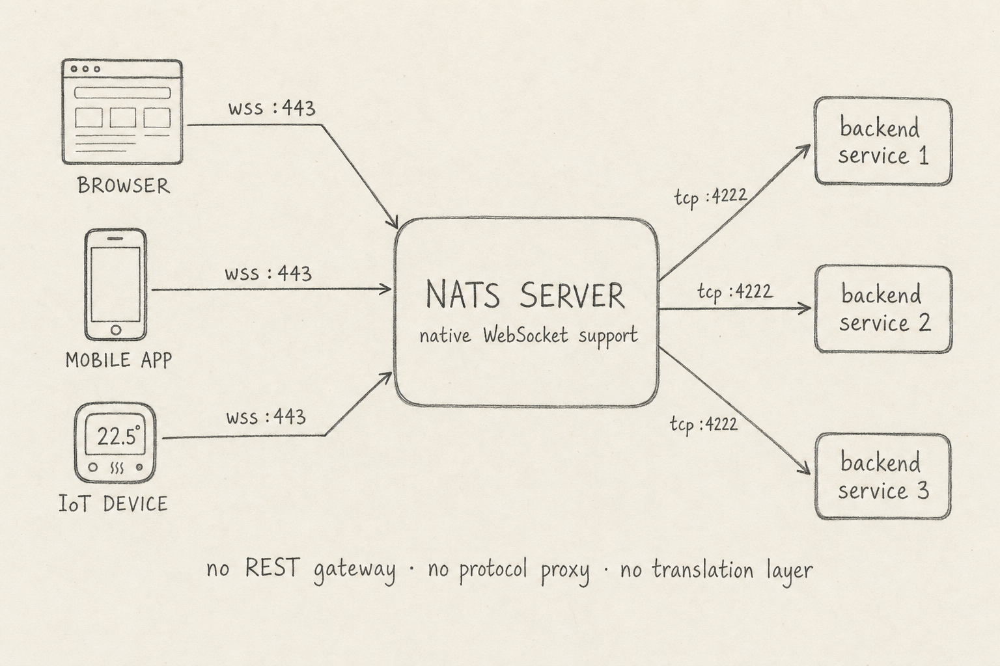
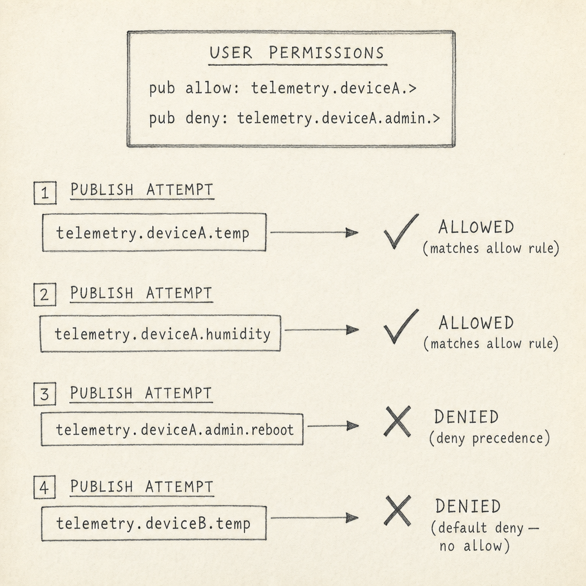
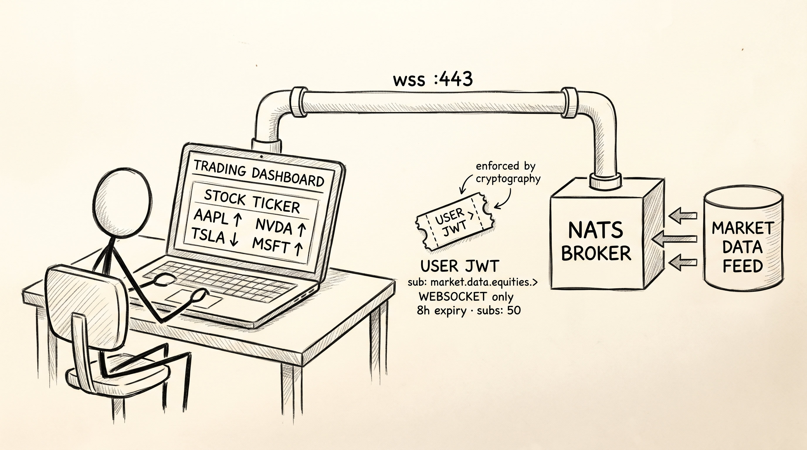

![Pencil schematic of a NATS super-cluster spanning two regions, drawn left to right. On the far left, four external client types stacked vertically: a browser, a mobile app, an IoT fleet thermostat, and a stick-figure B2B partner. Each client has an arrow going right to one of two leaf nodes in a middle column. Each leaf node has an outbound TLS arrow on port 7422 reaching into Regional Cluster A in the center — a triangle of three full-mesh-connected servers labeled nats-1, nats-2, nats-3. A labeled GATEWAY link with an encryption symbol connects Regional Cluster A to Regional Cluster B on the right, which has its own three-server full mesh of nats-4, nats-5, nats-6. A caption at the bottom reads: 'External clients connect via leaf nodes · regional clusters use full-mesh + gossip · gateways federate clusters into a super-cluster'.](images/edge-topology-schematic.jpg)
For most of the last decade, the rule for high-throughput message brokers was simple: keep them inside the VPC, behind a REST gateway, and let backend services talk to them on the trusted network. Exposing one directly to a browser tab, a phone, or a fleet of cell-connected sensors meant building a stateful translation layer in front and paying the latency cost. NATS removes the rule.
What changes is not the messaging model — that survives the trip outside. What changes is the discipline you bring to three things: how external clients reach the cluster, how the broker decides who they are, and what each one is allowed to touch. The rest of this post is those three things.
Before identity, there is transport. A modern browser cannot open a raw TCP socket. A mobile app inside a restrictive corporate network often cannot either. The traditional fix — an NGINX with Lua plugins, a Node bridge, a REST gateway faking async — added latency, broke end-to-end backpressure, and turned the gateway into its own stateful thing to scale and secure.
NATS speaks WebSocket natively at the broker. Browsers, mobile apps, and IoT devices connect on the same port your firewall is already letting through (typically 443) and use the same publish, subscribe, and request/reply primitives that backend services use. No translation layer. The broker is the edge.

For anything beyond a single broker, NATS scales through a layered topology. A cluster of three to five servers in one region holds full-mesh peer connections and gossips about who has joined. A super-cluster joins multiple regional clusters through gateway links, so a publisher in one region can reach a subscriber in another. And leaf nodes sit on the far edge — at a customer site, a factory floor, an IoT cellular hub — proxying local clients to an upstream cluster over a single outbound TLS connection.
The leaf node is the load-bearing piece for external-facing deployments. It is not part of the cluster mesh; it is a bridge attached to it. Many untrusted local clients collapse into one explicit, account-scoped trust hop into the cluster. A browser connecting to wss://app.example.com may land on a leaf, on a server in Region A, or on a server in Region B; gossip and interest propagation mean the same messaging fabric appears regardless of which physical endpoint accepted the connection. From any single client's perspective there is just one broker — and that is the point.
Once a client can connect, the next question is who they are. The wrong answer is a central user database that every broker queries — it bottlenecks, it is a juicy target, and it puts the broker in the identity-management business. NATS picks a different answer: identity is a delegated chain.
Three tiers. An operator is the root of trust; its public key is baked into the server config. The operator signs account credentials — one per logical tenant. Each account, in turn, signs user credentials — one per connection. Every client carries its user credential and presents it at connect time. The broker verifies the signature chain back to the operator. The broker never stores user records and never sees a private key. A breach of the broker reveals nothing useful.
![Pencil schematic of the NATS JWT trust hierarchy on a warm cream parchment background, drawn landscape and reading left to right. Three labeled rectangular boxes are arranged horizontally. Left box: OPERATOR NKey, with the subtitle 'root of trust · server config · kept offline'. A horizontal arrow labeled 'signs Account JWTs' connects it to the middle box. Middle box: ACCOUNT NKey, with subtitle 'tenant boundary · isolated subject namespace'. A second horizontal arrow labeled 'signs User JWTs' connects it to the right box. Right box: USER JWT, with subtitle 'per-connection identity · presented at CONNECT'. Below the right box, a small simple laptop icon labeled 'CLIENT' has a dashed arrow pointing up to the USER JWT box, labeled 'presents at connect'.](images/trust-hierarchy-schematic.png)
This is decentralization that matters in practice. A platform team can hand an account to an external organization — a partner, a customer, a regional subsidiary — and that organization issues credentials for its own users without coordinating with the platform team, without modifying server config, and without sharing private keys. The operator's signature on the account credential is all the broker needs.
The chain works when you can adopt the broker's identity workflow. Most organizations cannot. They have Okta, LDAP, a users table with bcrypt hashes, an OAuth provider — and they want NATS connections to authenticate against whatever they already run.
Auth Callout is the answer. When a client connects, the broker doesn't decide on its own. It forwards the connection attempt to an external auth service — a small microservice the team writes themselves — which makes the real decision against whatever identity backend it likes. The service replies with a freshly-minted user credential, and the broker binds that to the connection for its lifetime. Sensitive material on the wire (plain-text passwords from legacy clients, bearer tokens) is encrypted with one-time ephemeral keys so even an attacker with access to the internal messaging plane learns nothing useful.
The payoff is that existing identity systems get a NATS face without being rebuilt inside NATS. Service identities that never change connection-to-connection can stay on long-lived credentials and skip the round trip entirely. Auth Callout earns its place wherever identity is dynamic or the backend of record lives somewhere else.
A connected client has a verified identity. The next question is what it can touch. NATS answers in subjects — hierarchical strings like orders.us-east.45 that double as both the addressing primitive and the access-control primitive. Every credential carries allow and deny lists of subject patterns; the broker checks every publish and subscribe against them.
Two engine rules make the system predictable. Deny wins when a subject matches both an allow and a deny rule — useful for granting a broad prefix to a device while locking out a sensitive sub-hierarchy in the same breath. And anything not explicitly allowed is denied: once you list one subject in an allow list, you have implicitly denied every other. You cannot accidentally widen a permission by forgetting to write one down.

' and 'pub deny: telemetry.deviceA.admin.>'. Below, four publish attempts each show the subject on the left and an outcome on the right. Attempt 1 (telemetry.deviceA.temp): ALLOWED — matches allow rule. Attempt 2 (telemetry.deviceA.humidity): ALLOWED — matches allow rule. Attempt 3 (telemetry.deviceA.admin.reboot): DENIED — deny precedence. Attempt 4 (telemetry.deviceB.temp): DENIED — default deny, no allow matches." />The reason this scales to thousands of users without thousands of policy blocks is per-identity templating. A single permission rule can carry the user's own identity as a variable — "publish to orders.<your-user-id> and nothing else" — so every credential issued under that account naturally scopes itself to its own slice of the subject space. You write one rule; the broker applies it differently for every connection.
Tenant bridges. Subject permissions scope an individual user. They do not scope an entire tenant. For SaaS platforms putting many customers on the same broker, the right primitive is the account itself — the same account that sits as the middle tier of the identity chain. Each account is a sealed subject namespace: a publish from account A to orders and a subscribe in account B to the same string see nothing of each other. Cross-tenant data leak is not policy-enforced; it is architecturally impossible.
Real systems still need deliberate sharing — a control plane fanning out to every customer, a partner account exposing one feed to a downstream account, a multi-region deployment moving streams between regions. NATS handles this through exports and imports: an explicit, named, asymmetric bridge between otherwise-sealed accounts.
![Loose pencil-sketch illustration of two boxy buildings side by side on a warm cream parchment background, labeled in large hand-lettered ALL-CAPS at the top: ACCOUNT A on the left, ACCOUNT C on the right. Account A's wall icons show laptops and database cylinders; Account C's wall icons show dashboard graphs and document pages. A thick crosshatch-shaded wall stands between the two buildings. At ground level, a small enclosed walkway crosses through the wall with a hand-lettered sign reading 'EXPORT → IMPORT'; inside the walkway, a small package labeled 'from_a.>' is being carried from Account A toward Account C with an arrow indicating direction.](images/tenant-bridges-sketch.png)
The asymmetry is the trick. The source account decides whether to expose a subject at all (publicly, or only to a named allowlist of destination accounts). The consuming account decides what local name the imported subject appears under. External clients in the consumer see a short, friendly prefix and have no idea the data lives in another tenant — and no permission to attempt any other subject in that tenant's namespace.
The three pillars compose differently for different problems. Two worked scenarios show the shape.
A financial firm wants to push real-time equity quotes to a browser-based dashboard. The client is untrusted JavaScript on whatever laptop the user happens to own. Any credential held in browser memory has to do exactly one thing and no more.

', 'WEBSOCKET only', '8h expiry · subs: 50'; a small arrow annotation reads 'enforced by cryptography'. To the right of the broker, a cylinder labeled 'MARKET DATA FEED' pumps data into the broker." />Topology. The browser connects directly to the broker over WebSocket on port 443 — the same port the user's firewall is already letting through. No leaf node, no REST gateway, no protocol translator. The broker is the edge.
Identity. The firm's existing portal stays the identity authority. When the user logs in (with the same OIDC and MFA flow they already use), a backend service mints a fresh, short-lived NATS credential bound to that session and hands it back to the browser over the existing HTTPS connection. The browser presents that credential at connect; the broker verifies the chain back to the firm's account. There is no NATS-specific login screen and no separate user database.
Access scope. The minted credential is locked down hard. Subscribe is restricted to market.data.equities.>. Publishing is denied for every subject (a leaked credential cannot inject fake market data). The credential expires after eight hours, is bound to the WebSocket transport so it cannot be replayed over raw TCP, and caps the total number of subscriptions so the browser cannot exhaust the broker.
The trust boundary is the credential, not the network.
A smart-home provider has tens of thousands of legacy thermostats already deployed in customers' houses, each one authenticating with a hardcoded MQTT username and password baked in at the factory. The provider wants to move the backend to a NATS-based multi-tenant platform — without an over-the-air firmware update and without breaking any deployed device.
![Pencil sketch of legacy IoT thermostat migration on a warm cream parchment background. On the left, three old-style dial thermostats stacked vertically, each labeled 'HARDCODED CREDS' and emitting a speech bubble reading 'MQTT username/password'. Dashed wireless signal lines go right from each thermostat, converging into a central box labeled 'NATS BROKER'. Adjacent to the broker on the right, a smiling stick-figure character labeled 'AUTH CALLOUT SERVICE' holds a JWT ticket; the service has a connecting line to a small book labeled 'SQL DATABASE'. On the far right, three vertical container silos labeled 'CUSTOMER_X', 'CUSTOMER_Y', 'CUSTOMER_Z'. An arrow from the broker routes one specific thermostat's connection into the CUSTOMER_X silo, labeled 'mapped to tenant at connect'.](images/iot-migration-sketch.jpg)
Topology. Each thermostat speaks MQTT to a leaf node sitting at the regional edge, which proxies the connection onto the upstream cluster. Adding more leaf nodes scales the fleet linearly; the cluster itself does not change shape as the device count grows.
Identity. The thermostat cannot be modified, so it cannot generate keys or present a JWT — all it will ever send is its hardcoded username and password. Auth Callout bridges that. The broker forwards every connection attempt to an auth service that looks the device up in the provider's existing SQL database of device-to-customer mappings, finds which customer the device belongs to, and mints a NATS credential on the fly that places the device into that customer's account.
Access scope. The minted credential restricts publishing to that one device's own telemetry subjects (telemetry.device_beta_99.>) and nothing else. One compromised thermostat cannot publish on another device's behalf and cannot see another customer's traffic — the account boundary is sealed at the protocol level, not by a policy that could be miswritten.
The device sees no change. The credentials it sends are the credentials it has always sent. Everything that makes this an external-facing multi-tenant deployment happens between the broker, the auth service, and the SQL database — invisible to the deployed fleet.
Putting NATS in front of external clients is not "punch a hole in the firewall." It is composing three things deliberately. Topology decides where the bridge sits — leaf nodes catching untrusted clients, regional clusters carrying interest, gateways federating across distance. Identity decides who gets in — a delegated chain the broker verifies cryptographically, with Auth Callout as the escape hatch for systems whose users already live somewhere else. Access scope decides what each one can touch — per-identity, default-deny, and sealed at the account boundary.
Get the three right and the inversion holds: the internal cluster trusts everything implicitly because it is safe to; the external-facing cluster trusts nothing implicitly and verifies every contract at every connect. Not "expose the cluster" — collapse implicit edges into explicit hops.
![Pencil sketch of three classical stone pillars standing in a row, each carved with visible hatching for texture. Above the three pillars a single long horizontal stone lintel carries a hand-lettered inscription: 'VERIFIED CONTRACT — at every CONNECT'. The three pillars are labeled at their bases, left to right: TOPOLOGY, IDENTITY, ACCESS SCOPE. Below each base label, a smaller italic subtitle notes what each pillar provides: 'TOPOLOGY: where the bridge sits'; 'IDENTITY: who gets in'; 'ACCESS SCOPE: what they can touch'.](images/closing-pillars-sketch.jpg)
nats.ws repo was archived May 2026 and folded into nats.js; older posts and tutorials may still reference the archived repo.)